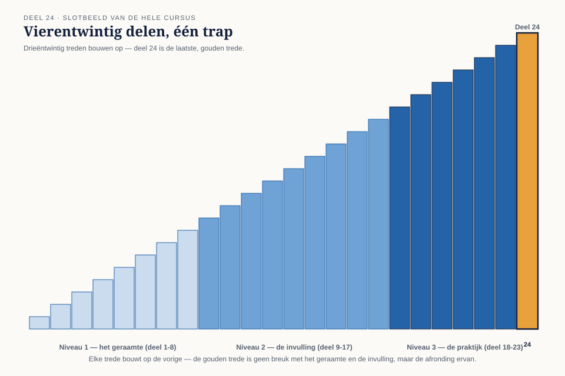

01
De hele cursus in vogelvlucht
⏱ 14 minNiveau 1 gaf het geraamte: oorsprong en bronnen (deel 1), de kaart lezen (deel 2), types en strategie (deel 3), autoriteiten (deel 4), gedefinieerde centra (deel 5), open centra en conditionering (deel 6), het experiment (deel 7), synthese (deel 8). Niveau 2 kleurde dat geraamte in: profielen (deel 9), kanalen (deel 10), circuits (deel 11), definitietype (deel 12), transits (deel 13), relatiecharts (deel 14), incarnatiekruis (deel 15), oefenreadings (deel 16), afronding (deel 17). Niveau 3 leerde je het verantwoord doorgeven: readingmethodiek (deel 18), cycli (deel 19), gezin (deel 20), teams (deel 21), ethiek (deel 22), de marathon (deel 23) — en vandaag, de afsluiting.
